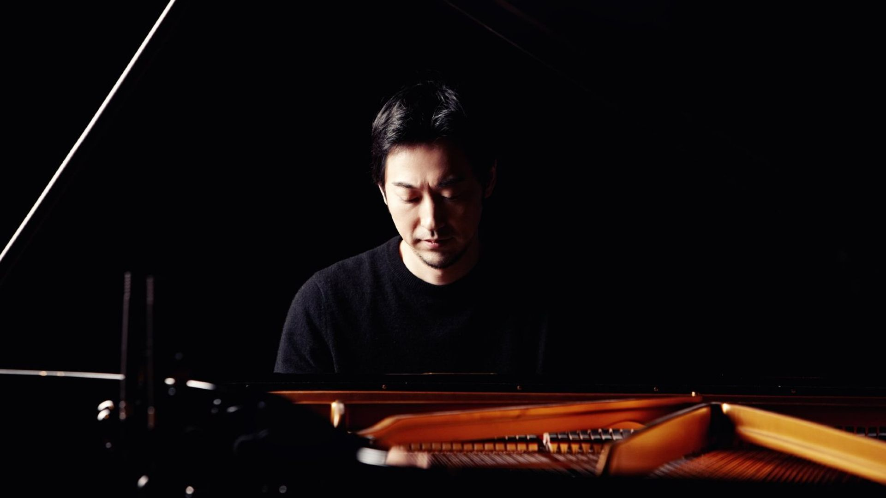

Yiruma

Lee Ru-ma (Korean: 이루마; born February 15, 1978), better known by his stage name Yiruma (Korean: 이루마),
is a South Korean pianist and composer. Yiruma frequently performs throughout Asia, Europe and North America.
His alma mater, King's College, London, helped him gain European popularity and recognition. Among his most
popular pieces are "River Flows in You", "Love Hurts", "Kiss the Rain", and "May Be". Yiruma's most popular album,
First Love, was released in 2001. He began playing the piano at the age of five and moved to London when he was 10,
in 1988, to study at the Purcell School of Music. He held dual citizenship, South Korean and British, until 2006,
when he gave up his British citizenship to serve in the South Korean Navy.
Yiruma's musical style primarily focuses on new-age, and is said to be similar to the contemporary classical music
in film scores or television dramas. Because his music is popular among many listeners who are not familiar with
classical music, the solo piano instrumentation and tendency toward "movements" often leads to labels like
"new classical", "pop classical" or "contemporary classical". However, although he formally studied composition,
the structure of his pieces do not reflect classical forms. His music has sometimes been classified vaguely as
"popular", as shown by the inclusion of his hit piece River Flows in You on a compilation of wedding pieces titled
"Wedding Essentials: The Ceremony".[3] The iTunes Store considers him a World Music[4] or new-age artist.
The categorization of his style as new-age is especially prevalent among classical musicians and listeners.
Let's Listen One of His Compositions!
It's one of My Favorite :)
It's one of My Favorite :)
Copyright 2019©